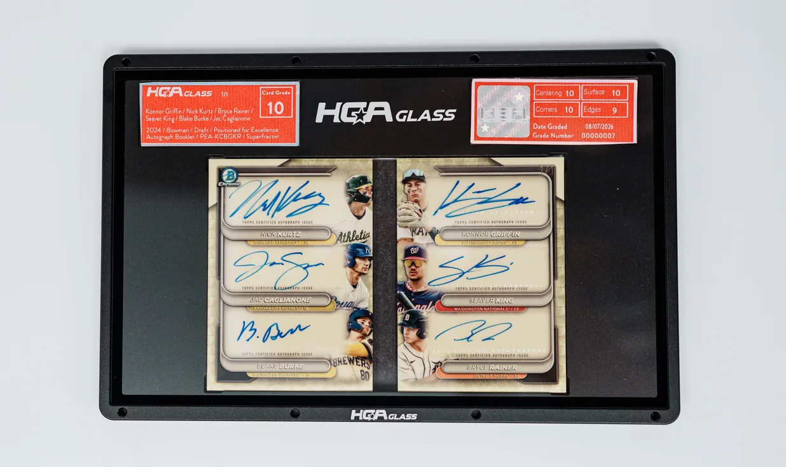
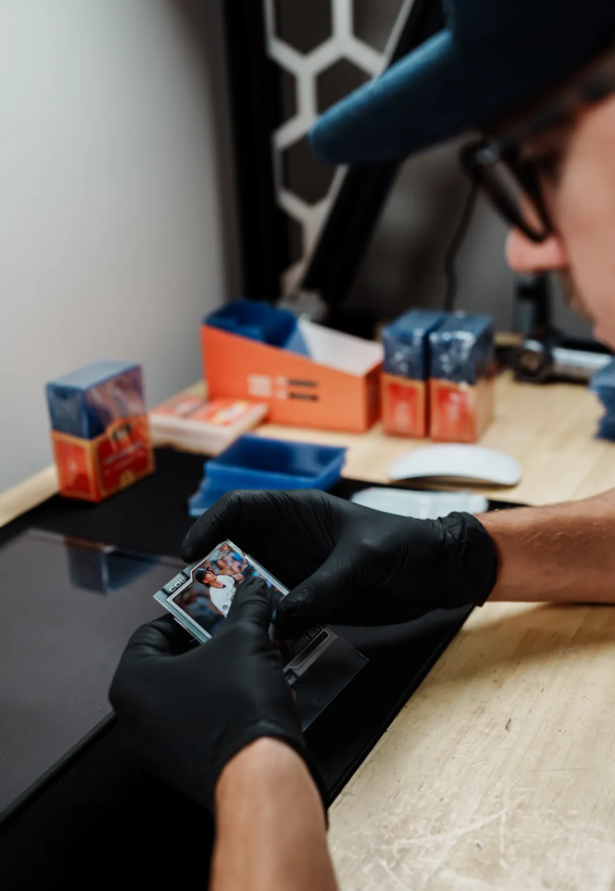
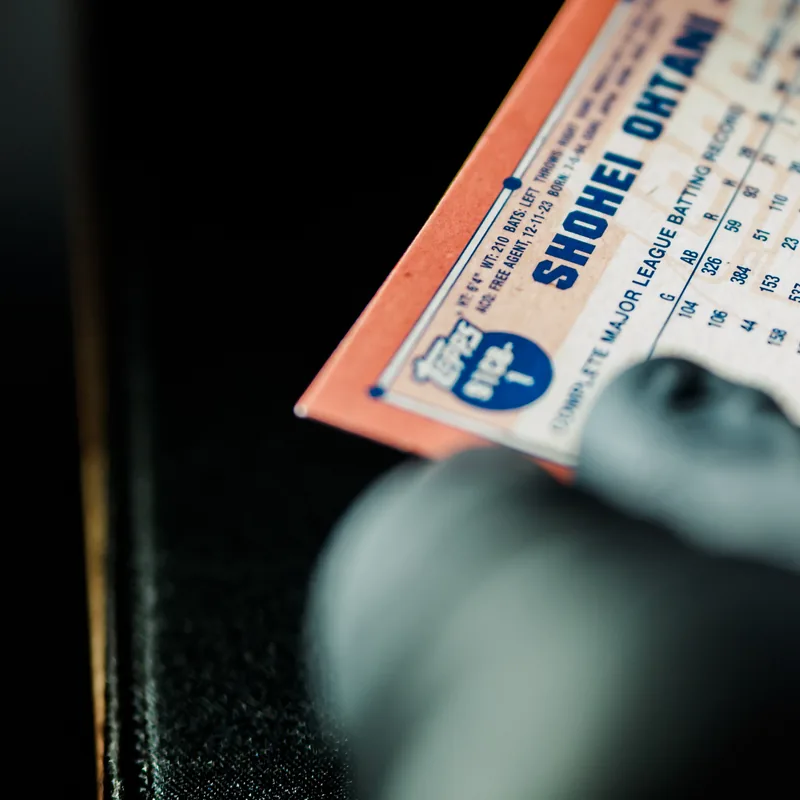

HGA 15
15 business days
HGA Poly$150Launch price
HGA Glass$600Launch price
- Delivery to reveal in 15 business days
- All subgrades, full Grade Report, autograph graded free
- No upcharge up to $10,000 card value (2% insurance above)
Grading standards · HGA Standard v2026.2 · In effect today
Grading shouldn't be a black box. This is our standard, in glass: what it costs, how we handle your cards, the full scale, every threshold, how each subgrade is inspected, and exactly what you get back.
Services and pricing
Pick a turnaround and a housing for each card. Launch tiers are below; during the presale, your cards are graded on the date you book.
15 business days
30 business days
Same inclusions, a longer clock and a lower price. Turnaround and pricing publish when HGA opens on February 1.
60 business days
Same inclusions, our longest clock at our lowest price. Turnaround and pricing publish when HGA opens on February 1.
Priced by turnaround only. Your card's value never changes the grading price under $10,000.
Split by tier at checkout, with a promise date for every submission.
Housings
Two housings, both built for every card size on the market. HGA Glass is a premium metal and glass housing, built to display.

Rebuilt for every card size on the market: 60+ sizes tooled to the card, chosen automatically to the nearest size that clears it. If no case has been made for your card's format, we pay to have one made, at no extra fee.

Metal and glass for premium cards. A display piece, not a plastic slab. If Glass is chosen and no exact size fits, the nearest Glass size is selected automatically and you're told before it ships.

Built for booklets
Booklet cards open like a book, and the panels have never been graded together as one card. A booklet is graded as one card and housed in a single slab.
What's included
Card grade, and the autograph grade when it is a 10. All four subgrades on the back. Cert number, and an RFID chip tied to the record.
Every defect a grader found, where it is on the card, how severe, with the images to prove it. Public on the cert.
Live status at every step, with photos and video at arrival, unboxing, imaging, the finished slab and the Reveal. Support built in.
No upcharge up to $10,000 card value. Above that, $200 insurance handling per $10,000, paid when you book your grading day.
If we lose or damage a card in our possession, we replace it or pay you for it. Every time. Documented live.
Legacy HGA slabs come back for recertification to the new standard and housings. Other companies' slabs cross over the same way.
The process
Every step is tracked live in your portal. The clock starts when the carrier delivers.
Box photographed, condition recorded. The clock starts at carrier delivery.
PhotoEvery card removed on video, barcoded and tracked. A missing card is refunded automatically.
VideoHigh resolution scans of both faces. Identity confirmed by a person. Authentication checks.
ImagesCentering set by the published scale. Graded by someone who never knows whose card it is, released by a senior grader.
StatusHoused in the case you chose. The RFID chip is written to the record; label, record and card verified; final images taken.
ImagesTurn each slab over live. Then decide within 7 days: ship home, list, or vault.
LiveThe scale
Your card grade is a whole number, 1 to 10. No plus, minus or half points on the overall grade. The precision lives in the four subgrades, published on every label.
Your grade is a number, 1 to 10. A card that is real and unaltered but can't be graded is returned as Authentic.
Centering, corners, edges and surface. Each scored on its own and published on every label. Centering is measured, and it can cap the grade.
A 10 with all four subgrades at 10 earns Flawless: the highest mark a card can carry, its own label, and HGA Glass at no charge.
What each grade looks like
Each grade says what a card can still have and what rules it out. Centering minimums are listed where they apply.
An absolute perfect card. No flaws. Centering, corners, edges and surface each earned a 10. The gold label, and HGA Glass at no charge. Not a grade you can round up to.
A nearly perfect card: four sharp corners, crisp focus, full original gloss and no staining. A card can reach a 10 in one of three ways.
Centering55/45 or better front · 75/25 or better back
A card in superb condition with only one minor flaw.
Centering65/35 or better front · 90/10 or better back
Rules it outAny wrinkle or crease, even a tiny one, or several small flaws that add up to a bigger problem.
Looks like a Mint 9 at first glance but shows a few small flaws up close.
Centering70/30 or better front · 90/10 or better back
Rules it outAny crease, even a tiny one, or a wrinkle that's more than barely visible.
Clear signs of light handling, but the card still looks good overall.
Centering75/25 or better front · 90/10 or better back
Rules it outA wrinkle that's easy to see, or any crease beyond the faintest.
Wear you can see, but still an attractive card.
CenteringNo minimum. 75.1/24.9 or worse on the front lands at 6 or below on centering alone.
Rules it outA heavy wrinkle or any crease beyond the faintest.
Clear wear, but the card still displays well.
Rules it outA deep crease, peeling surface layers, or a spot where part of the surface is missing.
Wear that's easy to see, but the card still has some eye appeal.
Rules it outA deep crease.
Heavy wear, but the card is still whole and easy to recognize.
Well worn, and the damage is obvious.
The lowest grade. Heavily damaged, with almost no eye appeal left. Graded so it is housed, recorded and protected.
No numerical grade. The card has been examined and deemed real and unaltered by HGA, and is housed with an Authentic label.
Never gradedAltered cards are not authenticated or encapsulated. Any sign of trimming, recoloring, repair or cleaning sends the card to our authentication team before it gets a grade.
Every card is graded to the standard in effect on the day it is graded. The card grade is set from the four subgrades; the autograph, where present, is graded on its own and never lowers the card.
The four subgrades
Every subgrade is scored on its own, 1 to 10, and printed on the back of the label. This is how each one is inspected and what each score means.

Subgrade 1 · Centering
We use a digital centering tool to measure each card's borders on the front and the back, and our graders confirm those measurements by hand. Because centering comes from how the card was cut at the factory, it carries extra weight and can limit a card's overall grade, however clean the rest of the card is.
| Front measurement | Grade |
|---|---|
| 50.0/50.0 through 55.0/45.0 | 10 |
| 55.1/44.9 through 59.9/40.1 Gem band | 9.5 |
| 60.0/40.0 through 65.0/35.0 | 9 |
| 65.1/34.9 through 70.0/30.0 | 8 |
| 70.1/29.9 through 75.0/25.0 | 7 |
| 75.1/24.9 or worse | 6 or lower |
| Back measurement | Grade |
|---|---|
| 50.0/50.0 through 75.0/25.0 | 10 |
| 75.1/24.9 through 90.0/10.0 | 9 |
| 90.1/9.9 through 95.0/5.0 | 8 |
| 95.1/4.9 or worse | 7 or lower |
Each card is measured against the same printed reference line on the front and the back, so every card of a set is judged the same way.
A front between 55.1/44.9 and 59.9/40.1 scores 9.5 on centering. Whether the card is a 10 or a 9 then comes down to the rest of the card.
Unusual shapes, miscuts and crooked cuts get a separate review so they're handled fairly, and the report says so.

Subgrade 2 · Surface
We inspect the full surface of every card, front and back, under controlled lighting and magnification, and tilt each card to catch flaws that don't show straight on. We look for factory flaws (print lines, print spots, focus problems) and handling damage (scratches, scuffs, stains, dents, wrinkles, creases). A mark on the player or character counts for more than one in the background. Every finding is located on the card image in the Grade Report.
No defects on either face under magnification, or at most one trace flaw that is barely visible and takes nothing from the card. Full original gloss, no staining.
One light flaw on the front, such as a light scratch or a light print line, or light marks on the back only. No wrinkle or crease of any size.
A noticeable scratch, a moderate print line, or several light flaws that together don't hurt the look. At most one tiny, barely visible wrinkle. No crease.
A deep scratch, a small printing mark or a slightly off register image, a little gloss gone, a light wax stain on the back. A light wrinkle or a barely visible crease.
Surface wear you can see, a heavy print line or another clear printing flaw, some gloss loss or borders turning off white. A wrinkle you can easily see, or a barely visible crease.
A few light scratches, or surface wear and printing flaws that are easy to spot. Gloss clearly dulled. A noticeable wrinkle or a clear crease. No peeling or missing surface.
Light scuffs or scratches, noticeable wear, surface layers starting to peel, or a spot where part of the surface is missing. A visible crease, but not a deep one.
Visible surface wear, printing flaws, a light stain on the front or a heavier wax stain on the back. Most of the gloss gone. A deep crease is allowed.
Obvious scratches, scuffs, light stains or chipped color on the front. More than one serious crease or wrinkle. The gloss may be gone entirely.
Creases so heavy they nearly break through, badly worn surface, heavy dirt or discoloration, warping, or a piece of the card missing.

Subgrade 3 · Corners
Every card gets a corner by corner inspection: all eight, four on the front and four on the back, under magnification. We look for rounding, fraying, dings, whitening and layers starting to separate, and weigh how easy each flaw is to see, how much of the corner it covers and how many corners it shows up on. Any sign of trimming or touched up corners sends the card to our authentication team first.
All eight corners sharp, front and back, with nothing found under magnification.
Slight wear on one corner, the kind you find under magnification. Everything else sharp.
Light fraying or a touch of softness at one or two corners, visible on close inspection.
Worn corners you can see at arm's length, on more than one corner. Still not rounded.
Corners that have started to round, or one hard corner ding.
Rounding on more than one corner, or one corner that's badly crushed.
Corners clearly rounded, with fraying you can see.
Clear rounding on every corner, though not extreme.
Rounding that's clearly advanced, corners fraying or separating in layers.
Corners badly worn, torn, or with pieces missing.

Subgrade 4 · Edges
We inspect all four edges on both faces, in the same order every time, end to end. Graders use a controlled light, a loupe and their fingertips, since some edge flaws are easier to feel than to see. We look for whitening, chipping, fraying, dents, peeling and discoloration. A slightly rough factory cut is noted, but doesn't count against the card the way wear does. Any sign of trimming, repair or chemical cleaning sends the card to review first.
Clean, smooth, fully colored edges on all four sides, front and back, under magnification.
Slight edge wear in one place, found only up close.
Some edge wear, even in more than one area, visible on close inspection.
Worn edges you can see at arm's length.
Chipping and small nicks along an edge.
Small chips along the edges, or an edge that has split.
Chipping you can see on more than one edge, with some color loss.
Edges clearly worn along their length, with fraying and color loss.
Heavily worn, chipped or notched edges on most sides.
Torn, broken or badly damaged edges.
Autograph
Every autograph is authenticated first, then graded for strength, placement and condition. A 10 goes on the front label. Anything less stays in the Grade Report, off the label. It can only help the card, never hurt it.
Bold, complete and fully on the card. Even ink, clean lines, no smudging, skipping or bleed.
Strong and complete. Slight thinning, a small skip, or placement that crowds the design.
Faded, smudged, streaky, incomplete, or running off the card. Recorded in the report; the label stays clean.
Blind grading
Who sent a card has no bearing on its grade. Not a dealer, not a big account, not a name the grader recognizes.

The grader sees the card and its record, never the submitter.
Every finding is recorded against this published standard. The grade is set from the record; the grader never types a number.
A senior grader reviews and releases every grade as the named releaser. Every edit is logged.
The Grade Report
Each finding placed on the card image with its severity, in plain words.
High resolution scans of both faces, and the sealed slab, kept with the record.
The report opens from the cert lookup and stays with the card in My Cards.
Written to a record no one can alter and tied to the chip in the label.
What is not public: how the four subgrades combine into the card grade. The standard is published in full; the math behind it stays server side, so it can't be gamed.
Open a sample Grade ReportPolicies
Presale passes are graded on the date you book. Launch tiers are quoted in business days on the US federal holiday calendar.
Never graded, never cased. Inconclusive after senior review: returned ungraded, fee refunded.
Support is built into your portal. Ask about any grade from the card itself. There is no formal appeal.
If we lose or damage a card in our possession, we replace it or pay you for it. Every step is documented in your portal.
No upcharge up to $10,000 in card value. Above that, $200 insurance handling per $10,000, paid when you book your grading day.
Legacy HGA slabs return for recertification to the new standard and housings. Legacy HGA
Seen enough?
HGA Glass at $200 a card, or Poly at $29, until January 31.